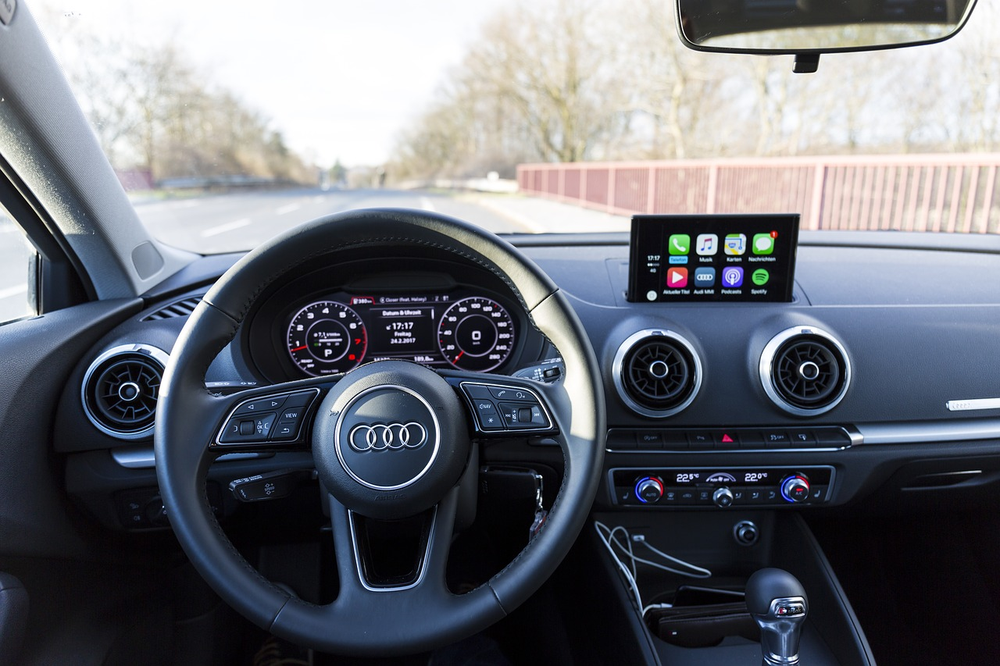
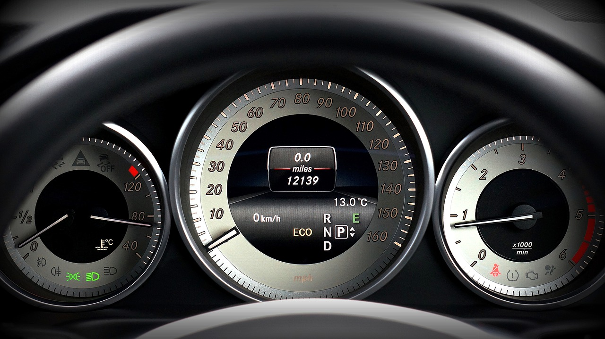
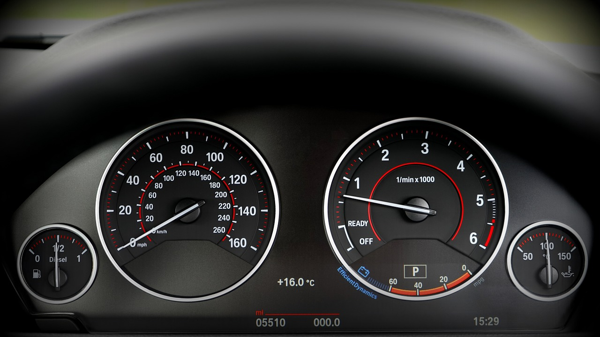
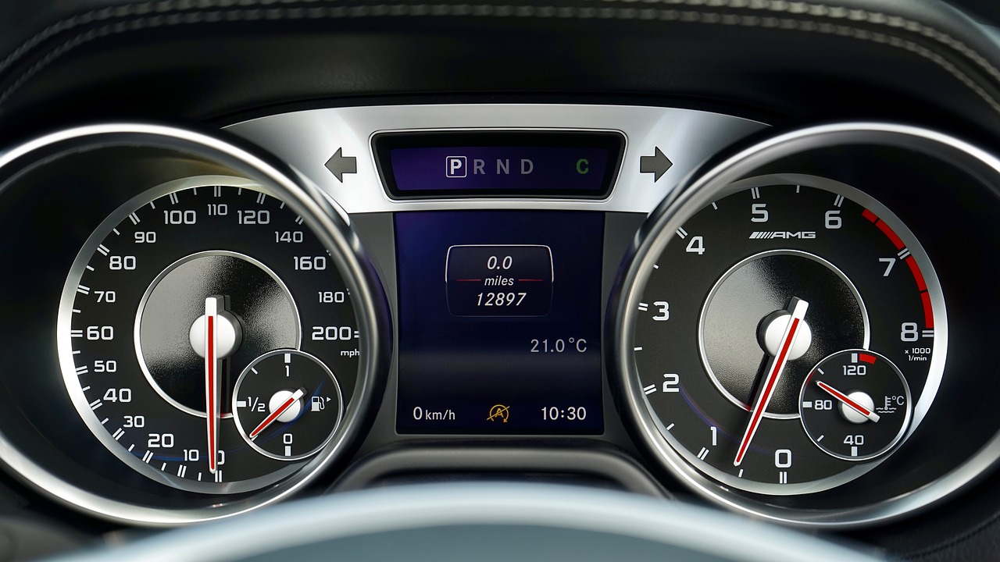

Project 2
Pranjal Ghimire
Part 1

Pros -
-
Good usage of tabs -
There are tabs at the top that tansfers to different data modes. -
Slider present in the main screen -
Provides easy interface to view more information by sliding the taskbar.
Cons -
-
Space use of tachometer and speedometer -
The tachometer and speedometer use up too much space. -
Less space for emergency signals-
The emergency signals are crunched together at the top right hand side.

Pros -
-
Well seperated functionalities -
The tachometer, speedometer and warning symbols are all seperated in different locations. -
Lights used to indicate use -
There are lights that turn on or off depending on the used materials and emegencies.
Cons -
-
Warning signals jumbled together -
The warning symbols are all seperated in two different functionalities are are all jumbled up. -
Congested data with seperate functionalities -
All unrelated information are all together in different seperations. In case of that, there should be seperations of two more small functionalities.
Pros -
-
Seperation of different functionalitites -
Space and seperation is well done between the edges. -
Related emergency signals -
Each seperation has its own emergency signals that are related based on the division.
Cons -
-
Least needed information in center -
The speedometer should be the main point of focus. - Spacing not well used -
There is too much information on the dashboard.

Pros -
-
Clean dashboard -
The dashboard has removed unneccesary information. -
Descriptive dashboard -
Each division has a descriptive data in divisions.
Cons -
-
No space for emergency signals-
The dashboard did not utilize all resources that the user may need. - Unused space and weird use of resources-
More than 15 percent of space of the dashboard is unused and some things are placed in wierd locations

Pros -
-
Digitalized data -
The dashboard has digitalized data including the speed limit which is redundant.
Cons -
-
Unneccesary information-
Used of PRND and left right signals are taking up too much space. -
Less functionalities-
The digital data does not provide all the information for the user.
Part 2
- My most common features and other more rare uses of a car dashboards
- Speed at which the engine turns
- Emergency Signals
- Amount of Fuel Remaining
- Speed of the car
- Light strength and Signal Indicators
- Engine temperature
- Total car mileage
- Air conidtioners
- Current Time and Outside Temperature
- Tire pressure
- Car health
- Cruise Control
- Radio/Tv/computer
- User interactions with dashboard.
- Radio/Tv/computer- Entertainment purposes
- Window wipers- Pull handle up/down to wiper window and push handle to throw water
- Brakes and accelerator- Push them to stop and accelrate the car as well as change engine speed
- Light switch- Move handle accordingly from dim to the the strongest light possible for fog
- Cruise control -Press the button to let the car go at same seed without accelerating or braking
- Signal- Turn handle accordingly to send information to the back car where to turn
- Emergency button- Press to signal that your car is in danger
- AC- press button to change temperature inside car accordingly
- Windows/door,trunk,gas- press buttons to open and close windows and door/trunk and open gas door
- Common mistakes with this design
- Too much information and buttons can become complicated.
- The user may not understand the button meanings.
- Different handle options may take some time to understand.
- Speedometer and tachometer may not be divided into sections.
- Improvement for control interface
- Screen on dashboard should have clickable buttons so user can choose important information
- Provide words rather than buttons so user understands
- Have instuuctions for different actions and handles
- Divide realted information into sections for easy finding
- Low fidelity prototype
Most Common features -
Most rare uses –